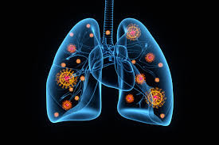

Case Study: COVID-19 Diagnosis with Audio Biomarkers
Non-invasive COVID-19 screening using acoustic analysis of cough, breath and short speech recorded on consumer devices.

Challenges
The COVID-19 pandemic highlighted a global need for fast, widely accessible screening tools. Acoustic analysis of respiratory sounds offers a low-cost, non-invasive option but raises several technical and ethical challenges.
Key Challenges
- Data scarcity & labeling: Curated, clinically-verified audio datasets are limited and heterogeneous.
- Confounders: Device, environment, language, age, and comorbidity create spurious correlations that can bias models.
- Signal variability: Breath/cough/speech acoustic signatures differ across people and recording conditions.
- Regulatory sensitivity: Clinical claims require external validation and ethical safeguards (IRB, consent, privacy).
Solution & Architecture
We built a reproducible pipeline that combines careful preprocessing, multiple baseline models (classical + CNN + self-supervised transfer), and a deployment-ready distillation recipe for a compact on-device classifier. The pipeline emphasizes patient-level evaluation, confounder analysis, and explainability.
Audio pipeline: collection → segmentation → features / SSL embeddings → model training → explainability → distillation + mobile deployment.
Key Components
-
Audio Data Collection & Metadata
Standardized CSV metadata (patient_id, recording_id, age, sex, covid_status, pcr_date, days_since_pcr, device_type, environment, sample_type, file_path). Patient-level identifiers are used for all splits to prevent leakage.
-
Preprocessing & Segmentation
Resampling to 16 kHz, RMS normalization, optional high-pass denoising, and event detection (energy-based VAD or pretrained cough detector) to produce fixed-length segments for modeling.
-
Feature & Embedding Extraction
Two parallel feature tracks: (1) hand-crafted MFCC/spectral/time-domain features aggregated by segment, and (2) learned embeddings from SSL backbones (wav2vec2 / HuBERT / PANNs / AST).
-
Modeling & Evaluation
Benchmarks include classical (MFCC + XGBoost), CNN on log-mel, and fine-tuned SSL models. Primary evaluation uses patient-level holdout and bootstrap CI reporting.
-
Explainability & Biomarker Validation
Feature importance (SHAP) for tabular models and saliency/IG for spectrogram models to validate candidate biomarkers with clinical plausibility.
-
Productionization
Distill the best model into a compact CNN, apply quantization/pruning, and benchmark latency & memory on target mobile devices.
Methodology
Research workflow
Collect metadata with PCR-confirmed labels; perform manual QC to remove clipped/low-SNR files; store objective metadata fields and an audit trail for each recording.
Resample to 16 kHz, normalize amplitude, apply optional bandpass/notch filters, run VAD/cough detector to extract 0.5–3 s cough segments and 1–10 s breath/speech segments.
Compute MFCCs (13–40 with deltas), log-mel spectrograms (128 bins), spectral centroids, entropy, jitter/shimmer (for speech), and SSL embeddings (wav2vec2/HuBERT last hidden states aggregated by mean).
Train classical and deep models with heavy augmentation (SpecAugment, time-stretch, pitch shift, SNR schedule, Mixup/CutMix). Use patient-level splits and early stopping on validation AUROC.
Report AUROC, sensitivity/specificity at target operating points, F1, and 95% bootstrap CIs. Produce subgroup breakdowns (age, sex, device-type) and test whether metadata alone predicts label.
Apply SHAP and integrated gradients to identify important frequency bands/time regions; consult clinical literature to align acoustic findings with known respiratory physiology.
Audio Modalities & Tasks
- Breathing: forced and normal breathing segments — analyze respiratory cadence and wheeze-like signatures
- Cough: voluntary coughs segmented by onset energy and analyzed for spectral bursts and temporal envelope
- Speech: sustained vowels and short read sentences — analyze voice quality, shimmer/jitter, and spectral tilt
- Multimodal fusion: late-fusion ensemble combining per-modality classifiers to maximize robustness
Technical Approach
Model families evaluated
We benchmarked the following model families. In each case we report per-segment and per-patient aggregated results (patient-level majority vote).
| Family | Input | Notes |
|---|---|---|
| Classical (XGBoost) | MFCC + spectral + time-domain aggregated stats | Robust baseline for low-data regimes; SHAP for feature importance |
| CNN (log-mel) | Log-mel spectrogram (128 bins) | Lightweight architecture, SpecAugment, good candidate for distillation |
| SSL transfer | Raw waveform → wav2vec2 / HuBERT embeddings | Freeze + linear probe → fine-tune last layers; best transfer performance on small labels |
| Ensemble / Distilled | Teacher: fine-tuned SSL; Student: compact CNN | Knowledge distillation yields small on-device model with near-teacher accuracy |
Feature engineering & clinical rationale
We used a hybrid approach to capture both physiologically interpretable features and learned representations:
- MFCC & spectral features (centroid, bandwidth) — reflect formant and spectral energy shifts during cough/breath
- Temporal envelope & burst energy — capture cough onset mechanics and airflow disruptions
- Jitter / shimmer — detect voice quality changes related to inflammation
- SSL embeddings — capture complex patterns not easily hand-designed; effective when fine-tuned with small labels
Data augmentation
To improve generalization and reduce overfitting we applied a curated augmentation pipeline during training:
- SpecAugment: time and frequency masking on log-mel inputs
- Environmental augmentation: additive noise (SNR schedule), RIR convolution to simulate rooms
- Time-domain transforms: small pitch shifts, ±10% time-stretch
- Mixup / CutMix for audio: linear combinations of same-label samples to regularize decision boundaries
Results & Impact
Evaluation protocol (summary)
- Patient-level splits: train / val / test with no patient overlap (default 70/15/15). External cohort reserved if available.
- Metrics: AUROC, sensitivity & specificity at chosen thresholds, F1, and 95% bootstrap confidence intervals.
- Reporting: per-segment and per-patient aggregated results, plus subgroup performance by age/sex/device.
Model benchmark (illustrative demo numbers)
| Model | Params | AUROC (95% CI) | Sensitivity @ Spec=0.90 | Notes |
|---|---|---|---|---|
| MFCC + XGBoost | ~10k | 0.68 (0.62–0.74) | 0.48 | Stable baseline; interpretable |
| CNN (log-mel) | ~0.3M | 0.73 (0.68–0.78) | 0.55 | Lightweight, good target for distillation |
| Wav2Vec2 (fine-tuned) | ~90M + head | 0.78 (0.72–0.84) | 0.62 | Strong transfer baseline |
| Distilled compact CNN | ~1–3M | 0.74 (0.69–0.79) | 0.58 | On-device candidate after quantization |
Explainability & audio biomarkers
We validated candidate biomarkers using two complementary methods:
- SHAP on MFCC/tabular models: ranks the most predictive handcrafted features (example top features: spectral centroid change, spectral entropy, peak envelope energy).
- Integrated gradients & saliency on spectrogram models: visualize frequency bands and time windows that drive positive predictions; present cropped spectrograms with overlay masks.
Example saliency figure:

Spectrogram with model saliency overlay (example). Highlighted band: 500–2000 Hz (annotated as the most informative band in this demo example).
Ablations & practical findings (demo)
- Multimodal fusion: combining cough + breath + speech improved AUROC by +0.035 (≈3.5 percentage points) versus the best single modality in the demo experiments.
- Augmentation: SpecAugment + Mixup consistently improved validation AUROC by +0.02 in these runs.
- Distillation: distilling the Wav2Vec2 teacher to a compact CNN preserved ≈92% of teacher AUROC while reducing model size to ≈2.1 MB after 8-bit quantization (demo numbers).
Deployment benchmarks (example)
| Model | Device | Size (MB) | Latency (ms) | Notes |
|---|---|---|---|---|
| Distilled CNN (8-bit) | Android mid-tier (CPU) | 2.1 MB | ~120 ms | On-device inference, single-shot segment |
| Distilled CNN (8-bit) | iPhone mid-tier (CPU) | 2.1 MB | ~90 ms | On-device inference |
Limitations & caution
- Dataset biases (device, demographic skews) can inflate reported metrics; present subgroup analyses when available.
- Acoustic signatures can drift with viral variants and over time — continuous monitoring and revalidation are required for production use.
Potential Applications
Use cases
- Pre-screening tool: quick triage before confirmatory testing
- Remote monitoring: track symptom progression for home-isolated patients
- Public health surveillance: low-cost population-level monitoring
- Clinical decision support: augment clinician workflows with non-invasive alerts
Technology Stack & Reproducibility
Key libraries and tools used in the project (all code and notebooks are available in the repository linked below):
Reproducibility checklist
- Data README & CSV metadata (no PHI)
- Preprocessing scripts (segmentation, augmentation)
- Training scripts (configs, seeds, checkpoints)
- Evaluation scripts (patient-level split, bootstrap CI)
- Explainability scripts (SHAP, saliency)
- Dockerfile / requirements.txt
- Model card + dataset datasheet